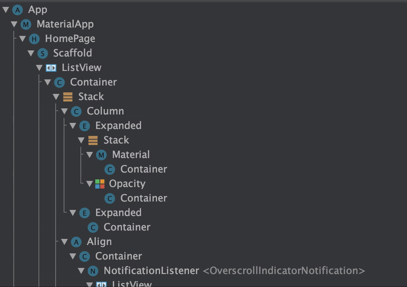
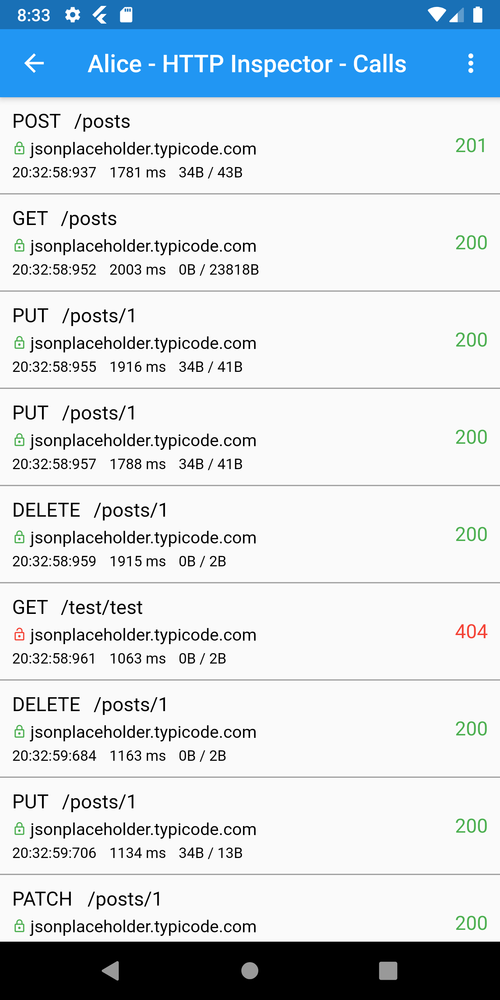
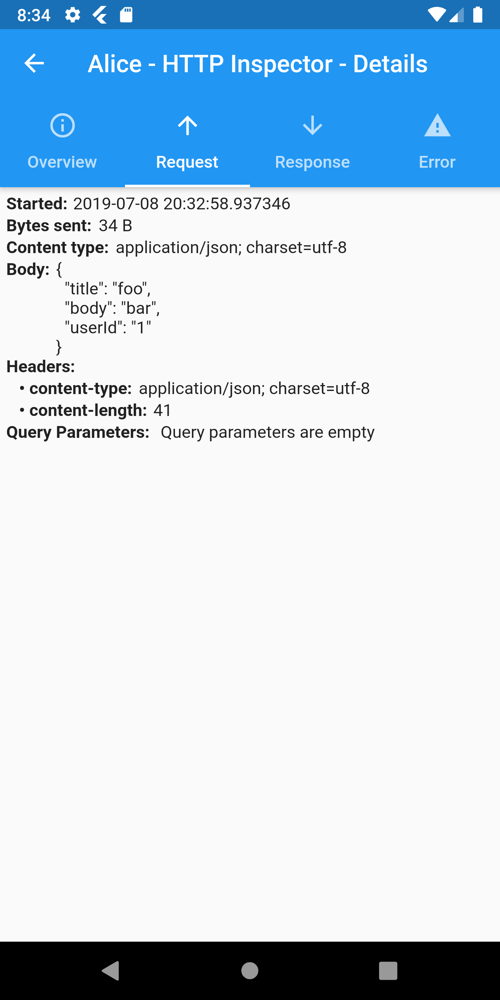
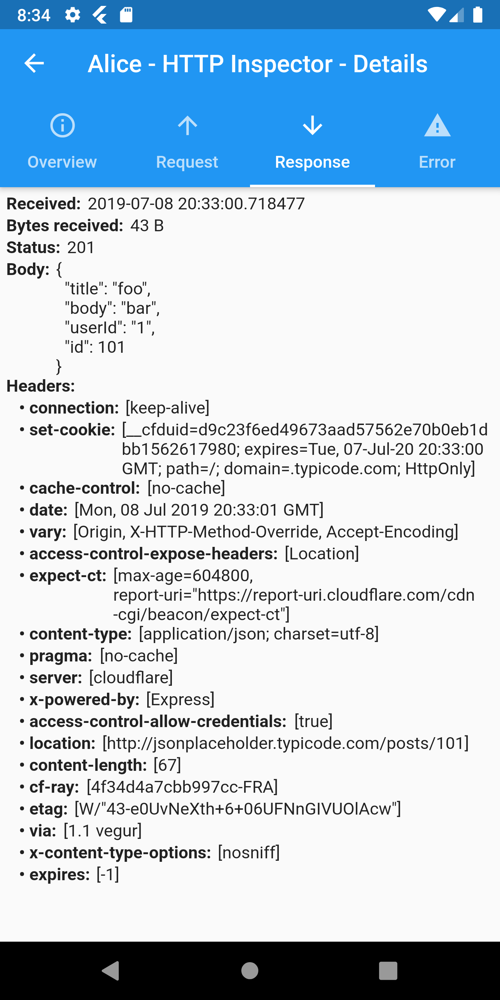
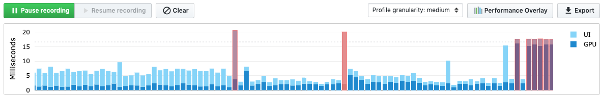
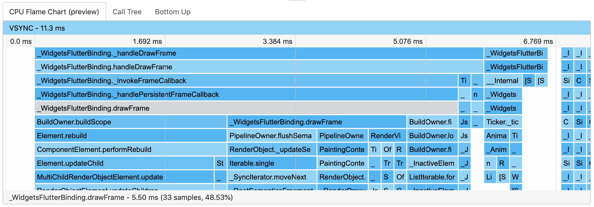
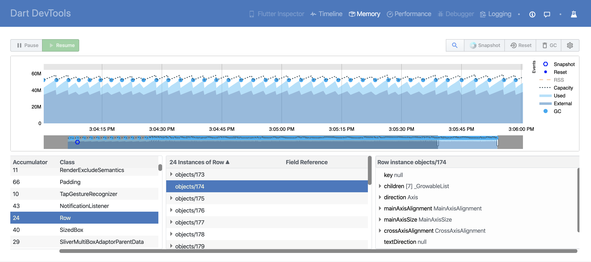
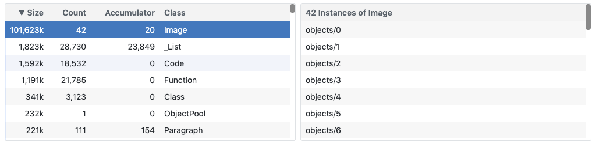
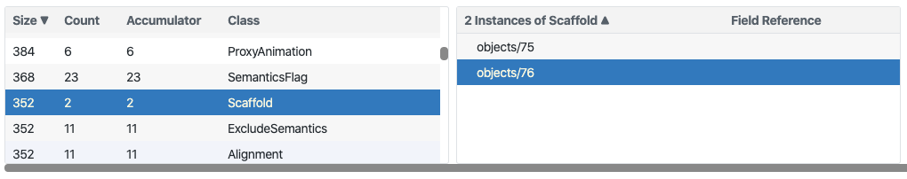
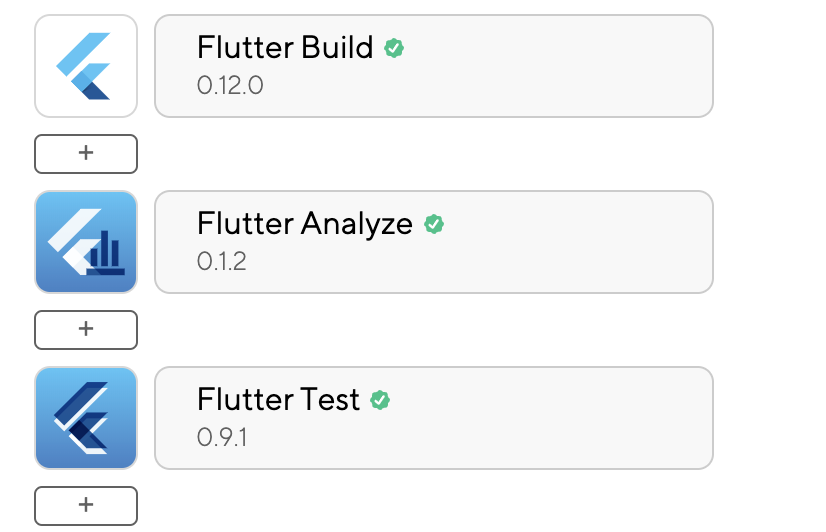

Flutter — make your life easier with DevTools
Grzegorz Dziubinski
UI
Networking
Performance
Code Quality
UI
What's the Widget?
Everything is a Widget
Column(
mainAxisSize: MainAxisSize.min,
children: [
Padding(
padding: EdgeInsets.only(
left: 10,
right: 10,
),
child: GestureDetector(
onTap: _openCardDetails,
child: Opacity(
opacity: isActive ?? 1.0 : 0.5,
child: CreditCard(
card: cardItem,
),
),
),
),
],
)...it can be even worse
What's the reason?
- UI/UX complexity
- Deep application flow

UI
Should we care?
https://pics.me.me/editing-css-just-one-more-pixel-perfect-garabatokid-0-10-61889664.png
public class FlutterActivity extends Activity implements Provider, PluginRegistry, ViewFactory {
// ...
public FlutterView getFlutterView() {
return this.viewProvider.getFlutterView();
}
public void onCreate(Bundle savedInstanceState) {
// ...
this.flutterView = this.viewFactory.createFlutterView(this.activity);
if (this.flutterView == null) {
FlutterNativeView nativeView = this.viewFactory.createFlutterNativeView();
this.flutterView = new FlutterView(this.activity, (AttributeSet)null, nativeView);
this.flutterView.setLayoutParams(matchParent);
this.activity.setContentView(this.flutterView);
// ...
}
// ...
}
public class FlutterView extends SurfaceView
Networking
What's on the plate?
pq/logs: A lightweight Dart logging framework
logs:
git: https://github.com/pq/logs.git
import 'package:logs/logs.dart';
final Log httpLog = Log('http');
void main() {
httpLog.enabled = true;
}
Alice: HTTP Inspector tool for Flutter with built in UI
dependencies:
alice: ^0.0.23httpClient
.getUrl(Uri.parse("https://jsonplaceholder.typicode.com/posts"))
.then((request) async {
alice.onHttpClientRequest(request);
var httpResponse = await request.close();
var responseBody = await httpResponse.transform(utf8.decoder).join();
alice.onHttpClientResponse(httpResponse, request, body: responseBody);
});
httpClient
.postUrl(Uri.parse("https://jsonplaceholder.typicode.com/posts"))
.interceptWithAlice(alice, body: body, headers: Map());
http.get('https://jsonplaceholder.typicode.com/posts').then((response) {
alice.onHttpResponse(response);
});
http
.post('https://jsonplaceholder.typicode.com/posts', body: body)
.interceptWithAlice(alice, body: body);  
Charles : Web debugging proxy

String proxy = 'YOUR_LOCAL_IP:8888';
// Create a new HttpClient instance.
HttpClient httpClient = new HttpClient();
// Hook into the findProxy callback to set
// the client's proxy.
httpClient.findProxy = (uri) {
return "PROXY $proxy;";
};
// This is a workaround to allow Charles to receive
// SSL payloads when your app is running on Android.
httpClient.badCertificateCallback =
((X509Certificate cert, String host, int port) => Platform.isAndroid);
// Pass your newly instantiated HttpClient to http.IOClient.
IOClient myClient = IOClient(httpClient);
// Make your request as normal.
var response = myClient.get('/my-url');
https://medium.com/flutter-community/three-easy-ways-to-debug-network-requests-in-flutter-53043e898929
Performance
Flutter build modes
> flutter run --help
Run your Flutter app on an attached device.
Usage: flutter run [arguments]
-h, --help Print this usage information.
--debug Build a debug version of your app (default mode).
--profile Build a version of your app specialized for performance profiling.
--release Build a release version of your app.
--flavor Build a custom app flavor as defined by platform-specific build setup.
Supports the use of product flavors in Android Gradle scripts, and the use
of custom Xcode schemes.
Frame rendering chart
16 ms / 60 FPS
Frame Flame chart

Memory
Memory Overview Chart
Snapshot classes

Code Quality
pub.dev/packages/pedantic 1.9.0
github.com/dart-lang/pedantic
# If you use `package:pedantic/pedantic.dart`, add a normal dependency.
dependencies:
pedantic: ^1.9.0
# Or, if you just want `analysis_options.yaml`, it can be a dev dependency.
dev_dependencies:
pedantic: ^1.9.0
analysis_options.yaml
include: package:pedantic/analysis_options.yaml
include: package:pedantic/analysis_options.1.9.0.yaml
linter:
rules:
- always_declare_return_types
- always_require_non_null_named_parameters
- annotate_overrides
- avoid_empty_else
- avoid_init_to_null
- avoid_null_checks_in_equality_operators
- avoid_relative_lib_imports
- avoid_return_types_on_setters
- avoid_shadowing_type_parameters
- avoid_types_as_parameter_names
- camel_case_extensions
- curly_braces_in_flow_control_structures
- empty_catches
- empty_constructor_bodies
- library_names
- library_prefixes
- no_duplicate_case_values
- null_closures
- omit_local_variable_types
- prefer_adjacent_string_concatenation
- prefer_collection_literals
- prefer_conditional_assignment
- prefer_contains
- prefer_equal_for_default_values
- prefer_final_fields
- prefer_for_elements_to_map_fromIterable
- prefer_generic_function_type_aliases
- prefer_if_null_operators
- prefer_is_empty
- prefer_is_not_empty
- prefer_iterable_whereType
- prefer_single_quotes
- prefer_spread_collections
- recursive_getters
- slash_for_doc_comments
- type_init_formals
- unawaited_futures
- unnecessary_const
- unnecessary_new
- unnecessary_null_in_if_null_operators
- unnecessary_this
- unrelated_type_equality_checks
- use_function_type_syntax_for_parameters
- use_rethrow_when_possible
- valid_regexps
Make it part of delivery process

> flutter analyze
Analyzing ...
info • This function has a return type of 'bool', but doesn't end with a return statement • lib/src/pages/home_page.dart:68:39 • missing_return
info • This function has a return type of 'bool', but doesn't end with a return statement • lib/src/pages/home_page.dart:274:39 • missing_return
info • 'headline' is deprecated and shouldn't be used. This is the term used in the 2014 version of material design. The modern term is headline5. This feature was deprecated after v1.13.8. •
lib/src/widgets/credit_card.dart:40:54 • deprecated_member_use
info • 'headline' is deprecated and shouldn't be used. This is the term used in the 2014 version of material design. The modern term is headline5. This feature was deprecated after v1.13.8. •
lib/src/widgets/credit_card.dart:61:60 • deprecated_member_use
4 issues found. (ran in 4.5s)
Logger
When debugging is too much
part of dart.core;
void print(Object object) {
or
import 'dart:io';
// ...
stdout.writeln(”Log message");
stderr.writeln(”Error log message ");
...or
external void log(String message, {
DateTime time,
int sequenceNumber,
int level: 0,
String name: '',
Zone zone,
Object error,
StackTrace stackTrace,
});
import 'dart:developer' as developer;
developer.log('scan_manual_input',
name: 'Reporting',
)
theEnd
Thank you for the attention!
https://gdziubinski.github.io/flutter-devtools/
github.com/gdziubinski
linkedin.com/in/grzegorzdziubinski